DÍAS
HORAS
MINUTOS
SEGUNDOS
El Festival Umbrales es un encuentro único de 24 horas que celebra la unión de las sociedades diurna y nocturna en un mismo espacio. Entre amaneceres y atardeceres, se cruzan culturas, identidades y tradiciones en un intercambio vibrante lleno de música, aromas, vestimentas y símbolos compartidos.
Vivir el Festival Umbrales es entrar en una experiencia multisensorial: sonidos, sabores, colores y texturas se mezclan en un desfile al aire libre que conecta a todo el país. Espuma fluorescente, hongos transformadores y vestimentas brillantes marcan un ritual colectivo que activa todos los sentidos y despierta la magia del umbral.
El Festival Umbrales es más que una fiesta: es una celebración que invita a compartir, intercambiar y reconocerse en lo distinto. Durante 24 horas se juega, se vive y se crea una síntesis cultural que revela la identidad de Noctilux: la mezcla que nos conecta.
 
